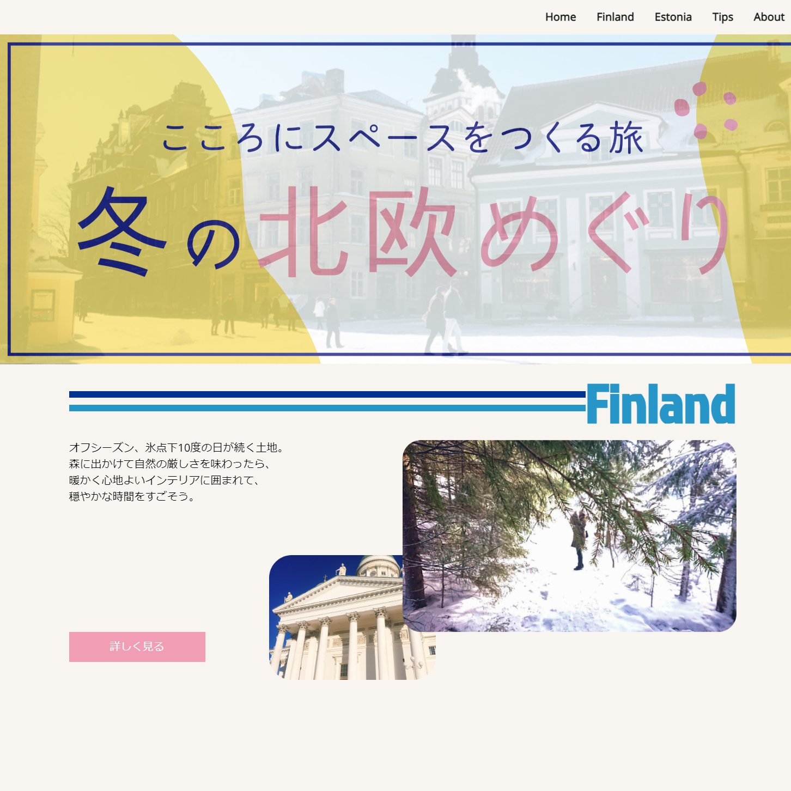
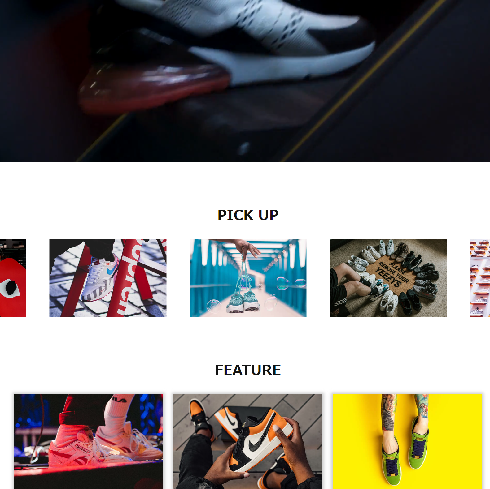

Profile
- 名前 ：
- しんご
- 生年月：
- 1989年10月
- 年齢 ：
- 33歳
- 趣味 ：
- 音楽 映画 アニメ お笑い など
Career
-
- 2005年4月～2008年3月
- 兵庫県北部の公立高校 受験に失敗し浪人を決意。
-
- 2008年4月～2010年3月
- 浪人 2年間浪人。
-
- 2010年4月～2016年3月
- 大阪市立大学 工学部 電子物理工学科 軽音楽部にのめりこみ、2年留年。
-
- 2016年4月～2018年4月
- 大阪市立大学 大学院 工学研究科 電子情報系専攻 気を入れ直し勉学に励む。
-
- 2018年9月～2019年3月
- サガミエレク株式会社 音響部品の電子部品開発という業種にひかれ入社。
Skill
- 使用できる言語：
- HTML, CSS, JavaScript(jQuery)
- 学習サイト ：
- Progate, Codestepなど
- 使用した参考書：
現在、ReactなどのJavaScriptライブラリを学習中。
Works
-
北欧旅の記録
知人がデザインした北欧旅の記録をコーディングさせていただきました。
- 使用言語：
- HTML, CSS, JavaScript(jQuery)
- ポイント：
-
- ・サイトタイトル画像を透過にしバックにslickでスライドショーをつけました
- ・スクロールイベントで線と点の位置関係とフェード表示のタイミングを工夫しました
- ・サイト後半はinviewを使いフェード表示させました
- 作成期間：
- 約20日間
-
スニーカーのニュースメディアサイト
Codestepの模写サイトの一つです。
- 使用言語：
- HTML, CSS, JavaScript(jQuery)
- ポイント：
-
- ・「PICK UP」にslickでカルーセルスライダーをつけました
- ・「FEAURE」では画像をグリッドレイアウトでタイル状に配置しスクロールイベントでフェード表示させました
- 作成期間：
- 約1週間
-
フラワーアレンジメント
ギャラリーサイト
Codestepの模写サイトの一つです。
- 使用言語：
- HTML, CSS, JavaScript(jQuery)
- ポイント：
-
- ・メインヴィジュアルはスクロールイベントを使いスクロール量によって画像が拡大縮小するようにしました
- ・サイトタイトルや「GALLERY」の画像はinviewを使いフェード表示させました
- 作成期間：
- 約1週間
Contact
Twitterのダイレクトメールまで